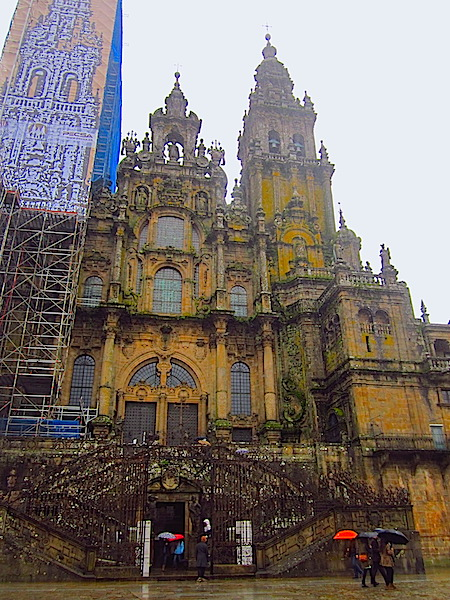
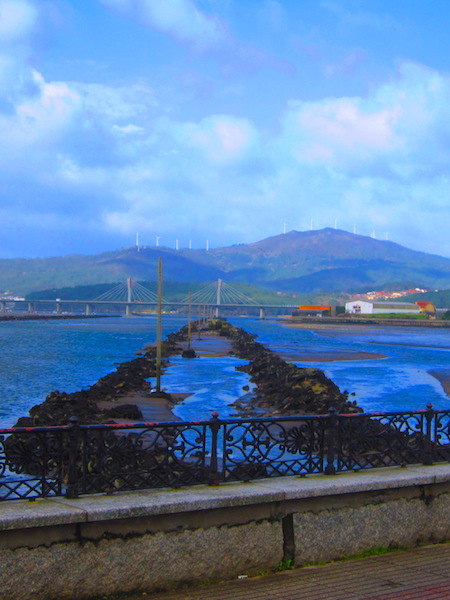

Salacious Stories
Lost without Translation
I have a shameful confession: despite having grown up in California, I barely speak any Spanish. I can count to 20 and fumble my way through asking for a beer and the way to the bathroom (yes, usually in that order), but that is unfortunately it.
So imagine my apprehension to set off by myself into the spanish countryside.
My trip to Spain in the spring of 2014 comprised of visits to Barcelona, Madrid, and Santiago de Compostela. That last one seems to have come out of nowhere, I know, so let me explain: my good friend J and I have traveled all over Europe together, and she planned out the trip to Barcelona and Madrid, but after that we parted ways because I didn’t have to money to follow her to Morocco. This left me with a few days to spare before meeting up with my boyfriend in eastern France, and I had to figure out somewhere to go. Because I’d read somewhere that Galicia was an old Celtic hub and that there were ruins all over the region, I chose to go there, to its capital, Santiago de Compostela, thinking that a, the capital was the place most likely to have people willing and able to speak english and b, since large centers of civilization tend to remain stationary (i.e., Paris, Rome, Istanbul, etc), that there were probably a ton of ruins near to Santiago.
I was wrong on both counts.
The day that I arrived in Santiago, I headed straight to the Tourist Office to find out where the nearest ruins were and how to get there. In Barcelona, a few days earlier, I had read about ruins a while away on the coast called O Castro de Baruña and how to get there, but I thought that would be a last resort. Turns out that Santiago and Galicia are much less rife with celtic ruins than I had hoped than O Castro de Baruña wasn’t a last resort, it was the resort. So with the help of the incredible lady at the Tourist office, I walked out of there with directions for 2 different buses and half a dozen maps to get me to O Castro.
The next morning I set out to catch the bus to Noia, my first destination. Unfortunately, the bus driver wasn’t quite so proficient in english as the woman from the Tourist Office, and when we pulled up an old, abandoned looking station, the only way I had to confirm our location was to ask him, “Noia, aquí?” So I hopped off the bus and he drove off, even though I’d understood that Noia was the terminus of that bus line, leaving me worried that I was lost without any recourse in a country where I barely spoke the language. Even the information office there was just a tiny little office with no one inside. I sat and panicked for about half an hour until someone showed up and told me about my next bus. Then, partially reassured, I popped over to the next-door grocery store to get a baguette and a bit of cheese for a heavenly afternoon at celtic ruins.
As per the instructions of the travel guide I’d read in Barcelona, I asked the bus driver right when I boarded to point out O Castro to me as we passed it, since it’s a little off the beaten path. BUT, let me remind you: I don’t speak spanish. So I mangled together a phrase through Californian osmosis: “Puedo me dice quando arrivar a O Castro de Baruña?”
I know, I know, I should be ashamed of myself. The arrogance of Americans to expect everyone in the world to cater to our incompetence! *shakes fist at the sky*

But it worked.
After about 20 minutes driving along the Atlantic coast of Spain, the bus pulled to the side of the road and the driver called out, “O Castro de Baruña!” He was such a nice guy that he didn’t point out the Castro from a speeding bus, only to let me out at a bus stop a mile away, but rather dropped me right at the trail head! I was so buoyed by such a random act of kindness that I practically floated out of the bus.
Right into pouring rain.
Having done my very best to pack light, I’d neglected to pack practically. That is, because of what I’d packed, I was going on a hike in the rain in flats and sans umbrella. 10 minutes later, though, what I saw made everything worth it.

By the time I’d actually reached the ruins the sky had cleared almost completely and was illuminating these stone buildings like it had for the past 3,000 years. Isn’t that astonishing? I can barely conceive of 5 years at a time, let alone 3,000. Anyway, I wandered around, took a million pictures, got ocean spray on my face, and had the perfect lunch in a little stone shelter on the side of one of the habitations.

I decided to meander back up toward the road a couple hours later, with enough time to catch the 3 last buses. You know, just in case there was a problem getting there in time, I had something to fall back on.
And boy, was there a problem.
Remember how the bus driver was nice enough to let me off right at O Castro? I didn’t notice the drawback to this until I made it back up to the road: I had no idea where the bus stop was.
I paced for a few minutes at the trailhead - the wrong side of the road - trying to figure out what to do, and then I saw an old man walking his dog on the other side of the road, so I ran across to ask him for help without stopping to remember that I don’t speak spanish.
“Donde el busso?” I said. He, of course, had no idea what this crazy american was talking about, so I continued, “Bus? Busso?” while approximating gestures of my hands on the gigantic steering wheel of a bus. Eventually he and his three remaining teeth understood what I meant and he gestured vaguely down the road in the direction from which I’d originally arrived. So I set off on what was probably the most stressful 20 minutes of my life.
I walked for about 10 minutes before coming across what may have been a bus stop 20 years ago.
Which did nothing to reassure me.
I paced back and forth between the bus stop and the side of the road for an interminable period of time, during which I crossed all my fingers, my hands, my arms, my toes, for the 10 seconds I was able to keep still. I’m not usually a superstitious person, but I figured it couldn’t hurt when I had nothing else going for me.
Finally, after the 5,683th time I checked the time, a bus came rolling around the corner! I’d never been so happy to see anything in my life. Since I still wasn’t entirely sure, I waved my hands around like a crazy person to catch his attention, and he did end up stopping for me, the same bus driver as earlier. Thanks to him and a metric crap-ton of luck, I made it back to Santiago that night.
Moral of the story: if you see an adventure, go for it. And then hope that you're real damn lucky.